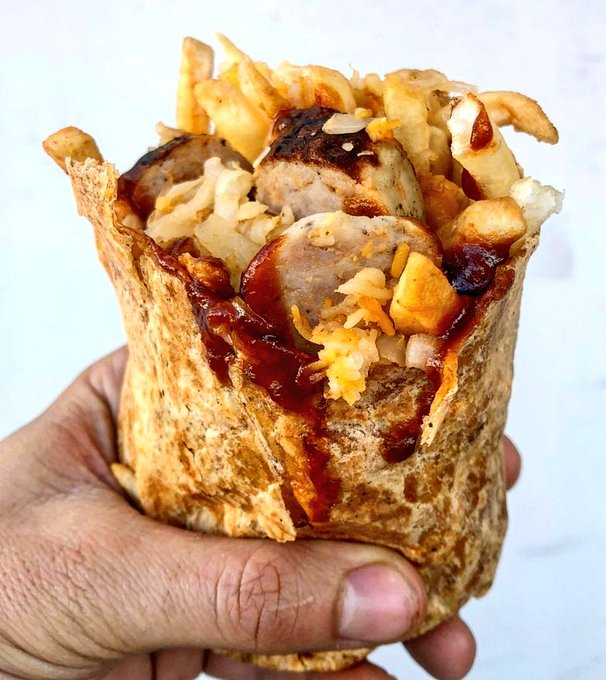

Aviso de gatilho: FOME!
Sempre quis saber o que os alemães comem nos estadios? Nesse quadro, toda semana vamos te contar com fotos, valores e ingredientes as comidas mais pedidas nos estadios que recebem os jogos do campeonato alemão.
Hoje nosso prato é o Burrito com batata frita, linguiça, cebola e ketchup de curry no Signal Iduna Park, estádio do Borussia
Dortmund!
Valor: €6 (R$ 30.72)
Eaí, amassaria um? 😳👇

#ComidasDaBundesliga [Via @FootyScran]
Currywurst (linguiça com ketchup e curry) com batata frita na Bayer Arena, estádio do Bayer Leverkusen!
💶 Valor: €6.50 (R$ 33.04)
Eaí, cai dentro? 😳

#ComidasDaBundesliga [Via @FootyScran]